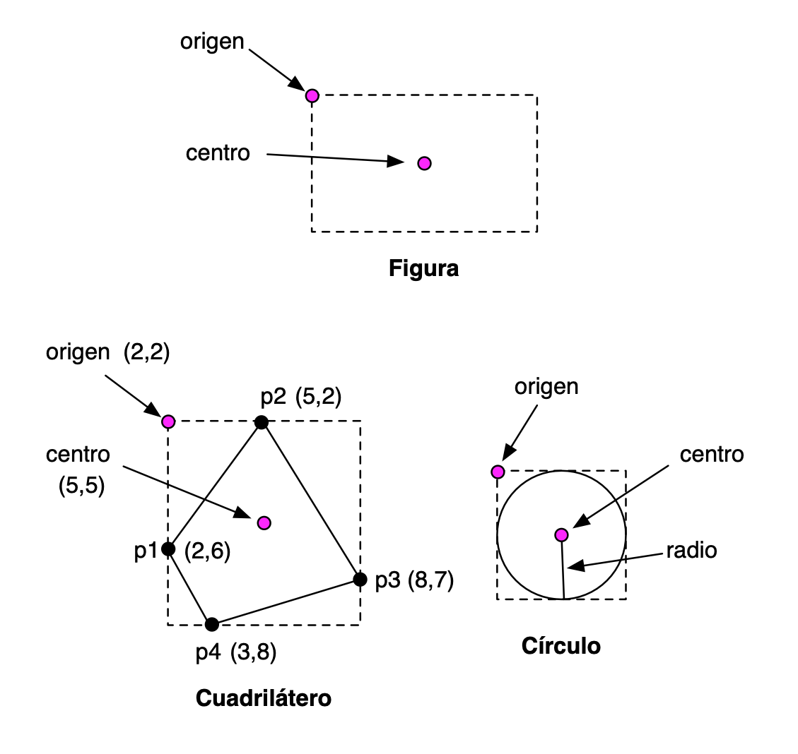

Lab 11: Object-Oriented Programming in Swift (1)¶
Before the Lab Session¶
The following exercises are based on the theory concepts covered last week. Before the lab session, you should review all the concepts and try with the Swift compiler all the examples from the following sections of topic 6 Object-Oriented Programming with Swift
- Classes and structures
- Properties
- Methods
- Initialization
- Inheritance
Swift Seminar¶
Also continue reading and trying the Swift seminar tour, specifically the Objects and classes and Enumerations and structures sections. This last section will also help you review the concept of enumeration and enumeration with associated value.
Exercise 1¶
Answer the following parts without using the Swift compiler. Once you have finished them, check whether the solution you indicated was correct.
a) Examine the following code. What error or errors does it have? Fix the errors with the minimum possible number of changes and indicate what will be printed on screen.
struct MiEstructura {
var x = 0
}
class MiClase {
var x = 0
}
func foo(_ c: MiClase, _ x: Int) {
c.x = x
}
let s1 = MiEstructura()
var s2 = s1
let c1 = MiClase()
var c2 = c1
s1.x = 10
c1.x = 10
print ("s2.x: \(s2.x), c2.x: \(c2.x)")
foo(c1, 20)
print("c1.x, después de llamar a la función: \(c1.x)")
b) Examine the code below and add to the Cuadrado structure two versions of a
movido method that receives an x increment and a y increment and returns a new
square resulting from moving its corner. Call the first version of the method
movido1 and use in it the movida method of the Coord structure. Call the
second version of the method movido2 and use in it the mueve method of the
Coord structure. Also add a mutating method mueve that does the same as the
previous ones, but mutates the position of the square.
struct Coord {
var x: Double
var y: Double
func movida(incX: Double, incY: Double) -> Coord {
return Coord(x: x+incX, y: y+incY)
}
mutating func mueve(incX: Double, incY: Double) {
x = x + incX
y = y + incY
}
}
struct Cuadrado {
var esquina = Coord(x: 0.0, y: 0.0)
var lado: Double
func movido1 ... {
...
}
func movido2 ... {
...
}
// Añade un método mutador mueve
}
c) Indicate what the print function displays on screen:
func foo(palabra: String, longitud: Int) -> Bool {
if palabra.count >= longitud {
return true
}
else {
return false
}
}
class MisPalabras {
var guardadas: [String] = []
func guarda(_ palabra: String) {
guardadas.append(palabra)
}
var x : [Bool] {
get {
return guardadas.map {foo(palabra: $0,longitud: 4)}
}
}
}
let palabras = MisPalabras()
palabras.guarda("Ana")
palabras.guarda("Pascual")
palabras.guarda("María")
print(palabras.x)
Exercise 2¶
a) The following code uses computed properties and property observers. What is printed at the end of its execution? Reflect on how the code works, check it with the compiler, and experiment by making changes and checking the result.
var x = 10 {
didSet {
if (x > 100) {
x = oldValue
}
}
}
var y: Int {
get {
return x / 3
}
set {
x = 3 * newValue
}
}
var z : Int {
get {
return x + y
}
set {
x = newValue / 2
y = newValue / 2
}
}
z = 60
print("y: \(y)")
print("x: \(x)")
z = 600
print("y: \(y)")
print("x: \(x)")
b) The following code uses property observers and a type (static) variable.
What is printed at the end of its execution? Reflect on how the code works, check it with the compiler, and experiment by making changes and checking the result.
struct Valor {
var valor: Int = 0 {
willSet {
Valor.z += newValue
}
didSet {
if valor > 10 {
valor = 10
}
}
}
static var z = 0
}
var c1 = Valor()
var c2 = Valor()
c1.valor = 20
c2.valor = 8
print(c1.valor + c2.valor + Valor.z)
Exercise 3¶
Write an example of code where you define an inheritance relationship between a base class and a derived class. Check in the code that an object of the derived class inherits the properties and methods of the base class.
Investigate how inheritance works in Swift. Write examples where you check this behavior. Some example questions you can investigate (you can add more questions):
- Can the value of a stored property be overridden? What about a computed property?
- Can an observer be added to a property of the base class in a derived class?
- Does the derived class inherit static properties and methods from the base class?
- How can you call the implementation of a base-class method in an override of that same method in the derived class?
Exercise 4¶
In this exercise we will work with geometric figures using structures and classes.
In the exercise, you must use the function for calculating the square root and the value of the mathematical constant pi.
- To use the
sqrtfunction, you must import theFoundationlibrary:
import Foundation
- You can obtain the value of the mathematical constant pi with the
Double.piproperty.
We assume that we are working with screen coordinates, where coordinate (0,0)
represents the coordinate of the top-left corner of the screen. The Y coordinate
grows downward and the X coordinate grows to the right. Coordinates will be
defined with decimal numbers (Double).
We are going to define the following structures and classes:
- Structures:
Punto,Tamaño - Classes:
Figura(superclass),CuadriláteroandCirculo(derived classes).

We are going to define stored properties and computed properties for all the geometric figures.
Structures Punto and Tamaño
You must declare them exactly as they appear in the notes.
Class Figura:
- Initializer:
Figura(origen: Punto, tamaño: Tamaño)
- Stored instance properties:
origen(Punto), which defines the coordinates of the top-left corner of the rectangle that defines the figuretamaño(Tamaño), which defines the height and width of the rectangle that defines the figure.
- Computed instance properties:
area(Double, read-only), which returns the area of the rectangle that encloses the figure.centro(Punto, read-write property). It is the center of the rectangle that defines the figure. If we modify the center, the position of the figure's origin is modified.
Derived class Cuadrilatero
A quadrilateral is defined by four points. The figure represents the rectangle that encloses the four points of the quadrilateral (see image above).
- Initializer:
Cuadrilatero(p1: Punto, p2: Punto, p3: Punto, p4: Punto). The points are given in clockwise order, although it will not always start with the point located farthest to the right. When creating the quadrilateral, we must update theorigenandtamañoproperties of the figure. To calculate these properties, you must obtain the minimum and maximum x and y coordinates of all the points.
- Own stored instance properties:
- The points of the quadrilateral
p1,p2,p3, andp4.
- The points of the quadrilateral
-
Computed instance properties:
centro(Punto, read-write), inherited from the superclass. Thesettermodifies the position of the points of the quadrilateral and the origin of the figure, moving them by the same increments by which the center of the figure has been moved.area(Double, read-only), which returns the area of the quadrilateral. This area can be calculated by adding the areas of the two triangles that form the quadrilateral.
You can use the following helper function to calculate the area of a triangle from the points of its vertices:
func areaTriangulo(_ p1: Punto, _ p2: Punto, _ p3: Punto) -> Double { let det = p1.x * (p2.y - p3.y) + p2.x * (p3.y - p1.y) + p3.x * (p1.y - p2.y) return abs(det)/2 }
Derived class Circulo
A circle is defined by a center and a radius. The superclass figure represents the smallest square in which the circle is inscribed (see image above).
- Initializer:
Circulo(centro: Punto, radio: Double). When creating the circle, we must update theorigenandtamañoproperties of the figure.
- Stored instance properties:
radio(Double), which contains the radius length.
- Computed instance properties:
centro(Punto, read-write), inherited from the superclass.area(Double, read-write), which returns the area of the circle. Thesettermodifies the size of the circle (its radius), keeping the center in the same position.
Structure AlmacenFiguras
- Stored properties:
figuras: array of figures.
- Computed properties:
numFiguras(Int), which returns the total number of added figures.areaTotal(Double), which returns the total sum of the areas of all added figures.
- Methods:
añade(figura:), which adds a figure to the array.desplaza(incX: Double, incY: Double): moves all figures by the specified dimensionsincX(increment in the X coordinate) andincY(increment in the Y coordinate). The centers of all figures must be moved by these magnitudes.
Implement the previous structures and write some example code where at least one quadrilateral and one circle are created, their properties are tested, they are added to the figure store, and its methods are tested.
Programming Languages and Paradigms, academic year 2025-26
© Department of Computer Science and Artificial Intelligence, University of Alicante
Domingo Gallardo, Cristina Pomares, Antonio Botía, Francisco Martínez